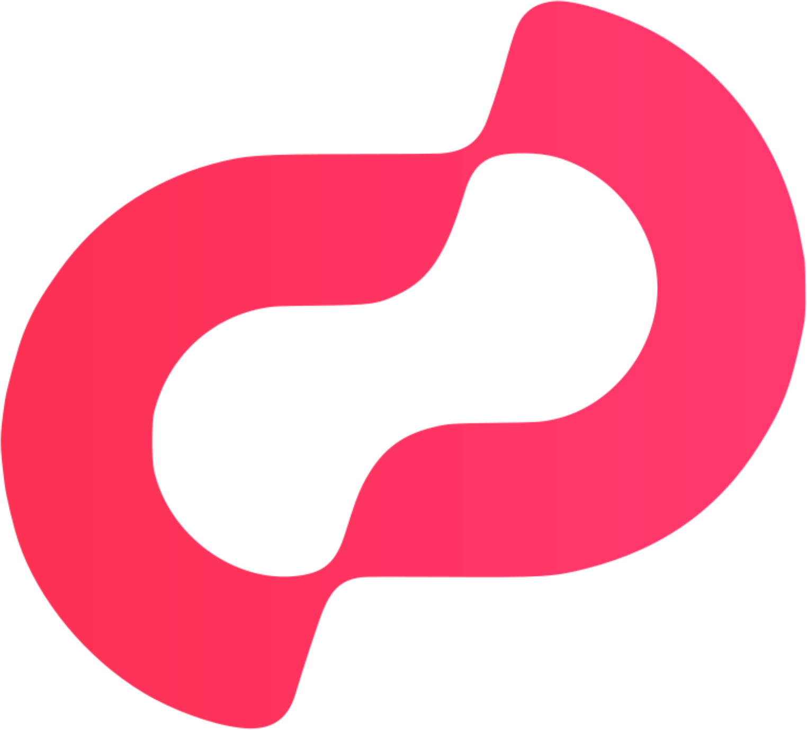
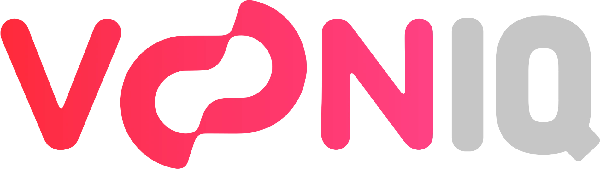

Talent Pathway · Uusi
Vaiheittainen polku kansainvälisille opiskelijoille ja heidän perheilleen.
SkillPath · Maksuton
Kerro omin sanoin, mitä osaat. Tekoäly näyttää sopivat ammatit ja koulutukset.
Talent Factory · Uusi 2026
ESCO-pohjainen CV-työkalu Suomeen muuttaneille.
BizPulse · Pilotit maksutta
Kevyt toiminnanohjaus pk-yrityksille ja yrittäjille.
Nordway
Neuvontaa työhön, yrittäjyyteen, opiskeluun ja perheenyhdistämiseen.


Tekoälypalvelut yrityksille
Aloitamme mitattavasta tarpeesta.